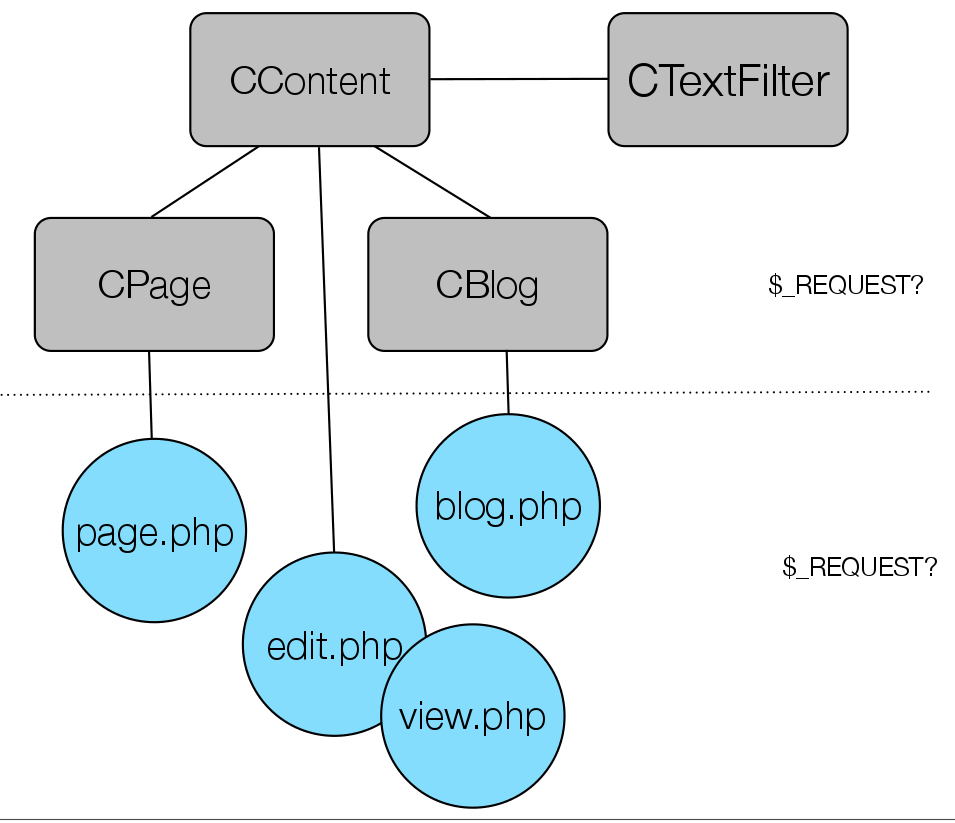

<!doctype html>
<html lang="sv">
<meta charset="utf-8" />
<title>En översikt av kursmomentet</title>

<!-- Mithril HTML Slideshow styles -->
<link href="css/mithril-slideshow.css" rel="stylesheet" />
<link href="css/theme-dark.css" rel="alternate stylesheet" title="Dark"/>
<link href="css/theme-light.css" rel="alternate stylesheet" title="Light" />

<!-- Code formatting using highlight.js -->
<link rel="stylesheet" href="css/default.css">
<link rel="stylesheet" href="css/tomorrow.css">
<script src="js/highlight.pack.js"></script>

<!-- Text formatting using Markdown through showdown.js -->
<script src="js/showdown.min.js"></script>


<!-- Here comes the slides in order -->
<script data-role="slide" data-markdown type="text/html">
#oophp kmom05
##Lagra innehåll i databasen
###Mikael Roos
</script>


<!-- slide -->
<script data-role="slide" data-markdown type="text/html">
#Agenda
##En översikt av kursmomentet
</script>


<!-- slide -->
<script data-role="slide" data-markdown type="text/html">
#Resultatet

<iframe style="background-color: #fff;" src="http://dbwebb.se/kod-exempel/lagra-webbsidans-innehall-i-databasen/view.php" width="1024" height="768" frameborder="0"></iframe>

</script>


<!-- slide -->
<script data-role="slide" data-markdown type="text/html">
#Uppgifter

* CTextFilter
* CContent
* CPage
* CBlog
* Moduler som kan återanvändas i projektet

</script>


<!-- slide -->
<script data-role="slide" data-markdown type="text/html">
#Utmaningen

* Skapa och jobba med moduler som återanvändbara enheter
* Göra designval när man skapar klasserna
* Studera var koden växer fram
* Fundera över vem gör vad och hur saker bör hänga ihop
* Pagecontrollern
* Vyer
</script>


<!-- slide -->
<script data-role="slide" data-markdown type="text/html">
#Om [CTextFilter](https://github.com/mosbth/Anax-oophp/blob/master/src/CTextFilter/CTextFilter.php)

* CTextFilter::bbcode2html()
* CTextFilter::makeClickable()
* CTextFilter::nl2br()
* CTextFilter::markdown()
* CTextFilter::doFilter()
* HTMLPurifier

</script>


<!-- slide -->
<script data-role="slide" data-markdown type="text/html">
#Hur designa klasserna?



</script>


<!-- slide -->
<script data-role="slide" data-markdown type="text/html">
#Om CContent

* Försök att minimera koden i sidkontrollerna.
* Sidkontrollerna [page,blog,view,edit].php *använder* CContent.
* Var skall formulären placeras?
* CContent använder/utökar CDatabase?

</script>


<!-- slide -->
<script data-role="slide" data-markdown type="text/html">
#Databastabellen

<pre data-code="c1"></pre>
</script>

<script id="c1" data-role="code" data-language="php" type="text/html">
CREATE TABLE Content
(
    id INT AUTO_INCREMENT PRIMARY KEY NOT NULL,
    slug CHAR(80) UNIQUE,
    url CHAR(80) UNIQUE,

    type CHAR(80),
    title VARCHAR(80),
    data TEXT,
    filter CHAR(80),

    published DATETIME,
    created DATETIME,
    updated DATETIME,
    deleted DATETIME
 
) ENGINE INNODB CHARACTER SET utf8;
</script>


<!-- slide -->
<script data-role="slide" data-markdown type="text/html">
#Formuläret


</script>


<!-- slide -->
<script data-role="slide" data-markdown type="text/html">
#Sanitera datat

<pre data-code="c4"></pre>
</script>

<script id="c4" data-role="code" data-language="php" type="text/html">
$sql = 'SELECT * FROM Content WHERE id = ?';
$res = $db->ExecuteSelectQueryAndFetchAll($sql, array($id));
$c   = $res[0];
 
$url    = htmlentities($c->url, null, 'UTF-8');
$type   = htmlentities($c->type, null, 'UTF-8');
$title  = htmlentities($c->title, null, 'UTF-8');
$data   = htmlentities($c->data, null, 'UTF-8');
</script>


<!-- slide -->
<script data-role="slide" data-markdown type="text/html">
#Tomt värde på key -> NULL

<pre data-code="c5"></pre>
</script>

<script id="c5" data-role="code" data-language="php" type="text/html">
$url = empty($url) ? null : $url;
</script>


<!-- slide -->
<script data-role="slide" data-markdown type="text/html">
#Hur gick det?

<pre data-code="c6"></pre>
</script>

<script id="c6" data-role="code" data-language="php" type="text/html">
$res = $db->ExecuteQuery($sql, $params);
if($res) {
    $output = 'Informationen sparades.';
}
else {
    $output = 'Informationen sparades EJ.<br><pre>' . print_r($db->ErrorInfo(), 1) . '</pre>';
}
</script>


<!-- slide -->
<script data-role="slide" data-markdown type="text/html">
#slugify()

<pre data-code="c2"></pre>
</script>

<script id="c2" data-role="code" data-language="php" type="text/html">
/**
 * Create a slug of a string, to be used as url.
 *
 * @param string $str the string to format as slug.
 * @returns str the formatted slug. 
 */
function slugify($str) {
    $str = mb_strtolower(trim($str));
    $str = str_replace(array('å','ä','ö'), array('a','a','o'), $str);
    $str = preg_replace('/[^a-z0-9-]/', '-', $str);
    $str = trim(preg_replace('/-+/', '-', $str), '-');
    return $str;
}
</script>


<!-- slide -->
<script data-role="slide" data-markdown type="text/html">
#Om CPage

* Specialisering av CContent
* Arv eller använder?

</script>


<!-- slide -->
<script data-role="slide" data-markdown type="text/html">
#Om CBlog

* Specialisering av CContent
* Arv eller använder?
* En specifik bloggpost
* Samtliga bloggposter

</script>


<!-- slide -->
<script data-role="slide" data-markdown type="text/html">
#Teaser

* De första paragraferna
* Visst antal tecken

</script>


<!-- slide -->
<script data-role="slide" data-markdown type="text/html">
#GetFirstParagraph()

<pre data-code="c7"></pre>
</script>

<script id="c7" data-role="code" data-language="php" type="text/html">
/**
 * Returns the first paragraph ot the text.
 * 
 * @return string as the first paragraph.
 */
public function GetFirstParagraph() {
    if(!isset($this->data['data_filtered'])) {
        return null;
    }
    
    $excerpt = $this->data['data_filtered'];
    $firstPara = strpos($excerpt, '</p>');
    $excerpt   = substr($excerpt, 0, $firstPara + 4);
    return $excerpt;
}
</script>


<!-- slide -->
<script data-role="slide" data-markdown type="text/html">
#GetExcerpt()

<pre data-code="c8"></pre>
</script>

<script id="c8" data-role="code" data-language="php" type="text/html">
/**
 * Returns the excerpt of the text with at most the specified amount of characters.
 * 
 * @param int $chars the number of characters to return.
 * @param boolean $hard do a hard break at exactly $chars characters or find closest space.
 * @return string as the excerpt.
 */
public function GetExcerpt($chars=139, $hard=false) {
    if(!isset($this->data['data_filtered'])) {
        return null;
    }
    $excerpt = strip_tags($this->data['data_filtered']);

    if(strlen($excerpt) > $chars) {
        $excerpt   = substr($excerpt, 0, $chars-1);
    }

    if(!$hard) {
        $lastSpace = strrpos($excerpt, ' ');
        $excerpt   = substr($excerpt, 0, $lastSpace);
    }

    return $excerpt;
}
</script>


<!-- slide -->
<script data-role="slide" data-markdown type="text/html">
#Meny i PHP

<iframe style="background-color: #fff;" src="http://dbwebb.se/kod-exempel/dynamic-navbar-menu-with-submenu-using-php-array-and-recursive-function/" width="1024" height="768" frameborder="0"></iframe>

</script>


<!-- slide -->
<script data-role="slide" data-markdown type="text/html">
#Meny i PHP...

* [Studera koden](http://dbwebb.se/coachen/skapa-en-dynamisk-navbar-meny-med-undermeny-via-php)

</script>


<!-- slide -->
<script data-role="slide" data-markdown type="text/html">
#PHP escaper

* HTML Body: htmlspecialchars() htmlentities()
* HTML Attribute: htmlspecialchars() htmlentities()
* JavaScript: addslashes() json_encode()
* CSS: n/a
* URL/URI: rawurlencode() urlencode()
* [Zend\Escaper](http://framework.zend.com/manual/current/en/modules/zend.escaper.escaping-html.html)

</script>


<!-- slide -->
<script data-role="slide" data-markdown type="text/html">
#PHP Filter

* ...

</script>


<script data-role="slide" data-markdown type="text/html">
#Frågor på det?
</script>


<script data-role="slide" data-markdown type="text/html">
</script>


<!-- include essential js-script -->
<script src="js/mithril.min.js"></script>
<script src="js/mithril-slideshow.js"></script>
</html>
